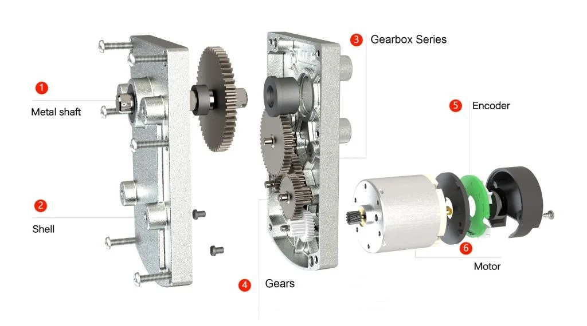

第 11 页 · 落地
≈ 25 min
前置：10 底盘与悬挂
执行器选型 Actuators
机构设计到这一步 confront 现实：每个自由度都要一个执行器来驱动。 选错执行器，机构再漂亮也白搭——扭矩不够带不动，速度不匹配快不起来，控制方式不对停不准。 这一页教你算清楚、选明白。
关节扭矩计算器 · 你的关节到底要多大力
最常见的场景：一根臂上挂着负载，舵机/电机要把它们抬起来。静态保持扭矩 = 重量 × 臂长（水平最不利位置），再乘安全系数选执行器。
静态保持扭矩（水平臂最不利工况）
拖动滑块，右侧实时更新所需扭矩与选型判读
静态扭矩 T = mgL·cosθ
0.49 N·m
同单位换算
5.0 kg·cm
含安全系数 SF 的需求
10.0 kg·cm
…
例题 · 收蛋臂的腕关节选多大舵机？
设末端 = 蜂窝筐 80 g + 蛋 42 g + 刮板与舵机摆臂 60 g ≈ 0.18 kg； 腕关节到末端质心 ≈ 0.12 m；水平伸直是最不利姿态。
T = 0.18 × 9.81 × 0.12 ≈ 0.21 N·m ≈ 2.2 kg·cm
动态启停冲击取 SF = 2 → 需求 ≈ 4.4 kg·cm。
选 9~13 kg·cm 数字舵机（MG996R 级别）即可，裕度再翻倍；肩关节（承担整臂）则要 20 kg·cm 以上——同一台机器人里扭矩需求从头到尾差一个量级。
四类执行器怎么选
比赛机器人上真正会纠结的就这四种。核心差异在控制方式： 位置要不要自己闭环？速度能不能调？停下来靠什么保证？
| 维度 | 舵机 | 步进电机 | 直流减速 + 编码器 | 无刷电机 |
|---|---|---|---|---|
| 本质 | 直流电机 + 减速箱 + 电位器，位置闭环出厂内置 | 同步电机按脉冲步进，开环 | 直流电机 + 齿轮箱，闭环靠自己（编码器 + PID） | 三相永磁同步，FOC 场向控制 |
| 控制信号 | PWM 脉宽 = 角度（50 Hz） | step/dir 脉冲 + 细分 | PWM 功率 + 编码器反馈 | 三相 PWM（ESC/FOC） |
| 速度范围 | 0.1~0.3 s/60°（有限摆角或 360° 连续型） | 低速好，高速掉步（>600 rpm 慎用） | 宽（减速比定档） | 极宽（几千~几万 rpm） |
| 扭矩特性 | 堵转扭矩可用（保持力强） | 低速扭矩大、随速度衰减 | 峰值高（减速箱放大） | 高速高效，低速需 FOC 才稳 |
| 停止方式 | 到位自动保持（内部闭环） | 脉冲停即停（掉步无告警） | PID 刹车，真实位置可验证 | FOC 零速保持（强） |
| 驱动器 | 无需（信号直驱） | A4988 / DRV8825（¥10~15） | TB6612 / DRV8833 + 编码器 | ESC / ODrive / VESC（贵） |
| 典型成本 | ¥15~120 | ¥25~40 | ¥30~80 | ¥150+ |
| 什么时候选 | 关节摆动、翻板、爪——首选 | 低速轻载、要省调参、预算极紧 | 底盘轮组当前主流 | 高转速、高效率需求（飞轮、推进） |
一句话选型
要角度 → 舵机（闭环白送）；要转速位置兼得、能调参 → 直流 + 编码器；
图省事且低速 → 步进（留 50% 扭矩裕度防掉步）；要飞起来 → 无刷。
记住执行器 = 电机 + 减速 + 反馈的组合体，三个部分都可以自己配，也可以买现成模组。
直流电机的脾气：扭矩-转速曲线
同一电压下，直流电机的扭矩和转速近似线性互换：堵转时扭矩最大、转速 0；空载时转速最高、扭矩 0。 减速箱的作用就是把工作点搬到"低速大扭矩"象限。
怎么用这条线选减速比
1. 从任务定需求点（如轮子：0.3 N·m @ 150 rpm）。
2. 在电机曲线上找效率甜点（大约在最大扭矩 1/4~1/3 处，转速同步取）。 例如 0.05 N·m @ 4500 rpm。
3. 减速比 i = 4500/150 = 30（转速对上了）；检查扭矩：0.05 × 30 × η(0.8) = 1.2 N·m ≥ 0.3 ✓（有余量给加速）。
4. 反向验证启动：堵转扭矩 0.2 × 30 × 0.8 = 4.8 N·m，坡道起步无忧。
速度不匹配用 i 除，扭矩不够用 i 乘——但每次乘除都在挪工作点，最终要让电机落在"甜点"附近跑。
2. 在电机曲线上找效率甜点（大约在最大扭矩 1/4~1/3 处，转速同步取）。 例如 0.05 N·m @ 4500 rpm。
3. 减速比 i = 4500/150 = 30（转速对上了）；检查扭矩：0.05 × 30 × η(0.8) = 1.2 N·m ≥ 0.3 ✓（有余量给加速）。
4. 反向验证启动：堵转扭矩 0.2 × 30 × 0.8 = 4.8 N·m，坡道起步无忧。
速度不匹配用 i 除，扭矩不够用 i 乘——但每次乘除都在挪工作点，最终要让电机落在"甜点"附近跑。
轮组模块：电机 + 弹簧悬挂 + 轮
现在比赛机器人的轮组普遍做成一体化模块——为什么？
悬挂不只是"过坎舒服"
比赛场地是拼接胶合板 + 泡沫垫：接缝高差、局部不平、载荷转移都会让刚性轮组瞬间离地。
离地 = 打滑 = 编码器读数与真实位移脱钩 = 闭环失效。弹簧悬挂把每个轮子独立压向地面，
是"用机械弹性给控制算法兜底"。设计要点：弹簧预紧力 > 单轮承载（保证全程压缩贴地），
行程 ±10~20 mm 覆盖场地公差，导向机构（平行四边形或滑槽）保证轮子只上下、不歪斜。
